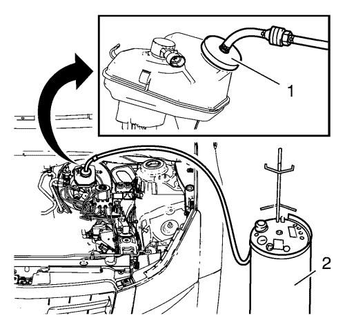

Purga de aire del sistema de frenos hidráulicos
Advertencia: Consulte Advertencia de líquido de frenos irritante en la sección Prólogo.
Precaución:Consulte Advertencia sobre los efectos del líquido de frenos sobre la pintura y los componentes eléctricos en la sección Prólogo.
Atención: Al añadir líquido al depósito acumulador de líquido de frenos o al depósito acumulador de líquido del embrague, sólo utilice líquido de frenos DOT-4 de un recipiente nuevo sin abrir. Este líquido de frenos poliglicólico es higroscópico y absorbe la humedad. No utilice líquido de un recipiente abierto que pueda estar contaminado con agua. El líquido inadecuado o contaminado podría dañar los componentes del sistema.
Utilice el líquido de frenos recomendado por GM o líquido de frenos equivalente a DOT-4. Consultar Adhesivos, líquidos, lubricantes y selladores .
- Coloque un trapo limpio debajo del cilindro de freno maestro para impedir que se derrame líquido de frenos.
- Con el encendido en OFF y los frenos fríos, presione los frenos 3-5 veces, o hasta que el esfuerzo sobre el pedal aumente notablemente para reducir la reserva del servofreno.
- Si ha realizado una purga de aire del cilindro maestro de freno en este vehículo, o si ha desconectado las tuberías de freno del cilindro maestro, o ha desconectado las tuberías de freno del conjunto de regulador de fuerza de frenado o el conjunto modulador del freno, debe realizar los siguientes pasos para purgar el aire en las tubuladuras del componente hidráulico:
| | Nota: Si es necesario extraer el diafragma y la caperuza del depósito acumulador, antes de hacerlo limpie la zona alrededor y sobre la caperuza del depósito acumulador. |
| 3.1. | Asegúrese de que el depósito acumulador del cilindro maestro de freno está lleno al máximo nivel. Si fuera necesario, añada líquido de frenos NUEVO de un envase de líquido de frenos nuevo cerrado. Consultar Adhesivos, líquidos, lubricantes y selladores . |
| | Nota: Para la válvula modeladora de presión del freno, realice estos pasos en la secuencia del flujo del sistema. Comience con las tuberías de alimentación de líquido desde el cilindro maestro. |
| 3.2. | Con las tuberías de freno montadas de forma segura en el cilindro maestro, la válvula moduladora de presión del freno, suelte y separe una de las tuberías de freno de la tubuladura del componente. |
| 3.3. | Permita que se purgue el aire de una pequeña cantidad de líquido desde la tubuladura abierta del componente. |
| 3.4. | Vuelva a conectar la tubería de freno a la tubuladura del componente y apriétela de forma segura. |
| 3.5. | Haga que un ayudante pise lentamente el pedal de freno complemente y mantenga una presión constante en el pedal. |
| 3.6. | Suelte la misma tubería de freno para purgar el aire de la tubuladura abierta del componente. |
| 3.7. | Apriete la tubería de freno, entonces haga que el ayudante suelte lentamente el pedal de freno. |
| 3.8. | Espere 15 segundos, después repita los pasos 3,3-3,7 hasta que se haya purgado todo el aire de la tubuladura del cilindro maestro. |
| 3.9. | Con la tubería de freno delantera montada de forma segura en el cilindro maestro, el conjunto regulador de fuerza de frenado, o el conjunto modulador del freno, una vez que se haya purgado todo el aire de la primera tubuladura del componente, suelte y separe la siguiente tubería de freno del componente y después repita los pasos 3,3-3,8 hasta que se haya purgado el aire de todas las tubuladuras del componente. |
| 3.10. | Tras completar el procedimiento de purgado de aire de la tubuladura de componente final, asegúrese de que todos los herrajes de componente a tubería de freno están bien apretados. |
Nota: Limpie el lado exterior del depósito acumulador sobre o alrededor de la caperuza del depósito antes de extraer la caperuza y el diafragma.
- Rellene el depósito acumulador del cilindro maestro de freno al nivel de llenado máximo con líquido de frenos de un recipiente de líquido de frenos nuevo no abierto. Consultar Adhesivos, líquidos, lubricantes y selladores .
- Desmonte la tapa del depósito del cilindro maestro de freno

- Monte un adaptador usual de purga de frenos (1) al depósito del cilindro maestro de freno.
- Compruebe el nivel de líquido de frenos en el purgador de presión de frenos (2). Rellene NUEVO líquido de frenos de un recipiente de líquido de frenos nuevo sin abrir según sea necesario para dejar el nivel a aproximadamente la mitad. Consultar Adhesivos, líquidos, lubricantes y selladores .
- Conecte el purgador usual de presión de frenos (2) al adaptador de purga de presión de frenos (1).
- Cargue el depósito de aire del purgador de presión de freno a 175-205 kPa (25-30 psi).
- Abra el purgador usual de presión de frenos (2), o válvula de depósito de líquido equivalente, para permitir que el líquido de frenos a presión entre en el sistema de frenos.
Nota: Cualquier fuga de líquido de frenos que se detecte debe ser reparada antes de finalizar este procedimiento.
- Espere aproximadamente 30 segundos, después compruebe todo el sistema de frenos hidráulicos para asegurarse de que no hay fugas externas de líquido de frenos.
- Monte una llave de cabeza de caja cerrada adecuada en la válvula de purgador de aire de circuito hidráulico de la rueda TRASERA DERECHA.
- Monte un tubo flexible transparente sobre el extremo de la válvula de purga de aire.
- Sumerja el extremo abierto del tubo flexible transparente en un recipiente transparente parcialmente lleno de líquido de frenos NUEVO de un recipiente de líquido de frenos nuevo sin abrir. Consultar Adhesivos, líquidos, lubricantes y selladores .
- Afloje la válvula de purga para purgar el aire del circuito hidráulico de la rueda. Permita que el fluido fluya hasta que dejen de salir burbujas de aire del purgador de aire, después apriete la válvula de purga.
- Con la válvula de purga del circuito hidráulico de la rueda trasera derecha apretada de forma segura, una vez que se haya purgado todo el aire del circuito hidráulico trasero derecho, monte una llave de cabeza de caja cerrada adecuada en la válvula de purga del circuito hidráulico de la rueda DELANTERA IZQUIERDA.
- Monte un tubo flexible transparente en el extremo de la válvula de purga, después repita los pasos 13-14.
- Con la válvula de purga del circuito hidráulico de la rueda delantera izquierda apretada de forma segura, una vez que se haya purgado todo el aire del circuito hidráulico delantero izquierdo, monte una llave de cabeza de caja cerrada adecuada en la válvula de purga del circuito hidráulico de la rueda TRASERA IZQUIERDA.
- Monte un tubo flexible transparente en el extremo de la válvula de purga, después repita los pasos 13-14.
- Con la válvula de purga del circuito hidráulico de la rueda trasera izquierda apretada de forma segura, una vez que se haya purgado todo el aire del circuito hidráulico trasero izquierdo, monte una llave de cabeza de caja cerrada adecuada en la válvula de purga del circuito hidráulico de la rueda DELANTERA DERECHA.
- Monte un tubo flexible transparente en el extremo de la válvula de purga, después repita los pasos 13-14.
- Tras completar el procedimiento final de purga de aire del circuito hidráulico de las ruedas, asegúrese de que cada una de las 4 válvulas de purga de circuito hidráulico de las ruedas están correctamente apretadas.
- Cierre la válvula del depósito de líquido del purgador usual de presión de frenos, después desconecte el purgador (2) del adaptador de purga (1).
- Desmonte el adaptador usual de purga de presión de frenos (1) del depósito del cilindro maestro de freno.
- Monte la tapa del depósito del cilindro maestro de freno.
- Rellene el depósito acumulador del cilindro maestro de freno al nivel de llenado máximo con NUEVO líquido de frenos de un recipiente de líquido de frenos nuevo no abierto. Consultar Adhesivos, líquidos, lubricantes y selladores .
- Pise y suelte suavemente el pedal de freno. Observe la percepción del pedal de freno.
- Si el pedal de freno da una sensación blanda, siga estos pasos:
| 28.2. | Si el vehículo está equipado con frenos antibloqueo, utilizando una herramienta de diagnóstico, realice el procedimiento de purga automática del sistema de frenos antibloqueo para retirar cualquier resto de aire que pueda haber quedado atrapado en la BPMV. |
Nota: Si la luz de advertencia del sistema de frenos permanece iluminada, NO permita que el vehículo sea conducido hasta que se diagnostique y repare.
- Gire la llave de contacto a la posición ON, con el motor apagado. Compruebe si la luz de advertencia de sistema de frenos sigue iluminada.
- Si la luz de advertencia del sistema de frenos sigue iluminada, consulte Síntomas - Frenos hidráulicos .
| © Copyright Chevrolet. Reservados todos los derechos |